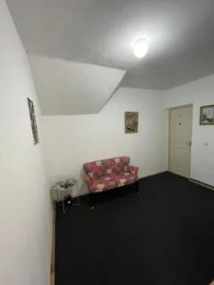
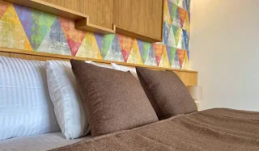
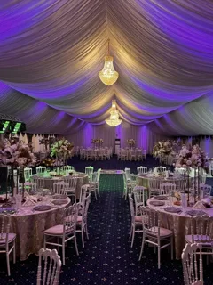
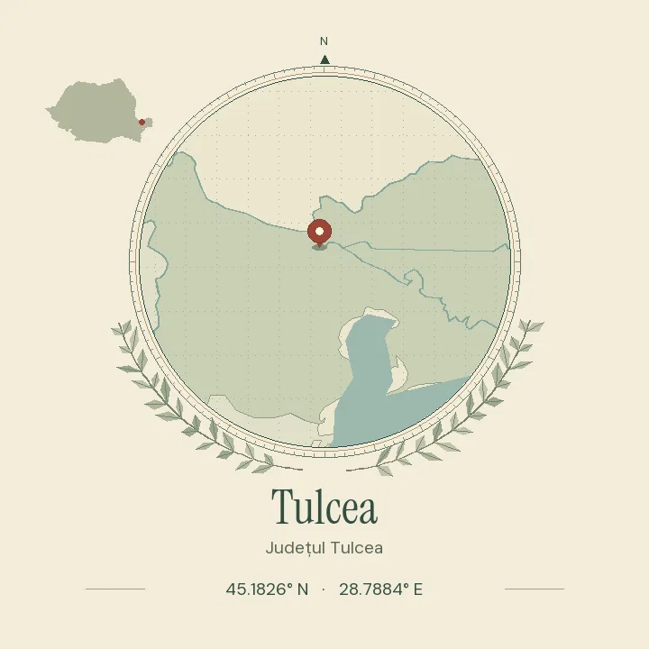
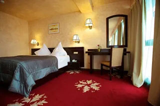
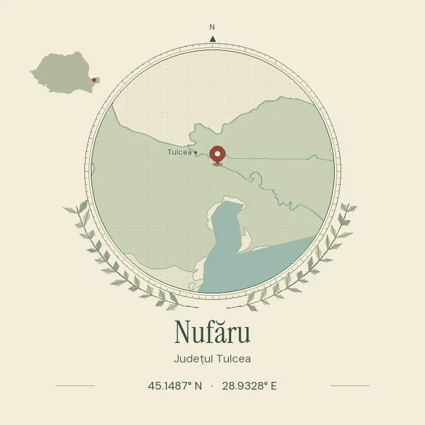

Locații de nuntă în județul Tulcea
- locații în director
- 8
- cu cazare în registrul SITUR
- 4
- medie ponderată Google
- 4,3 / 5
- evaluări Google
- 7.753
Cum alegi unde mergi la vizionare
La o proprietate din Tulcea întrebați de la început cum ajung invitații la adresa exactă și cum se întorc seara. Pentru o ceremonie cu vedere spre apă, verificați accesul până la scaune, iluminarea după apus și ce porțiune poate fi rezervată pe întreaga durată a evenimentului.
Un vizitator de la La Conac, în Nufăru, menționează foișorul. Întrebați ce se poate rezerva din jurul lui și dacă mesele se pot muta la adăpost fără ca invitații să părăsească proprietatea. Pentru una dintre adresele din municipiu puteți folosi același criteriu de comparație. Cereți o schiță cu locul în care ar sta rudele care au nevoie să se așeze încă de la sosire.
Două adrese pentru o zi de vizionări
Pe hartă, între aceste două proprietăți sunt 4,6 km în linie dreaptă. Deschide indicațiile de drum din fișe ca să vezi traseul pe șosea înainte de a stabili a doua întâlnire.
- Pensiunea Lebăda · Loc, Strada Isaccei 100, Mineri
- Hotel Insula · Strada Ivanov Dumitru 1, 820168 Tulcea
Explorează după localitate
Toate locațiile din județul Tulcea
Ordinea ține cont de nota Google și de numărul evaluărilor. Cum calculăm ordinea

Fotografie a locației · Sursa fotografiei Tulcea · Pensiune
Casa Trandafirilor
Pensiune de familie în Tulcea, cu curte cu flori și foișor, notată 4,8: ce laudă oaspeții, ce reclamă și ce să întrebi pentru invitați.
Strada Trandafirilor 27, 880000 Tulcea+40 742 856 298
Fotografie a locației · Sursa fotografiei Tulcea · Hotel
Hotel Condor
Hotel lângă faleza din Tulcea, cu terasă, separeu și meniu cu influențe caucaziene. Recenziile semnalează gândaci în camere; ce să verifici.
Strada Progresului nr.24, 820009 Tulcea+40 240 553 680
Fotografie a locației · Sursa fotografiei Mineri · Hotel
Pensiunea Lebăda
Pensiunea Lebăda. La pensiunea din Mineri, un client al restaurantului amintește curtea mare de lângă lac și locul de joacă pe care l-a văzut vara.
Loc, Strada Isaccei 100, Mineri+40 755 937 641Fotografie a locației · Sursa fotografiei Tulcea · Hotel
Esplanada
Un client care a luat masa pe terasa Esplanada din Tulcea își amintește că a așteptat să îi fie preluată comanda.
Strada Portului, 820242 Tulcea+40 240 516 607
Hartă ilustrată Tulcea · Hotel
Hotel Insula
Lângă Hotel Insula, un oaspete a găsit un parc potrivit pentru plimbări de seară, cu bănci, foișor și o mică plajă.
Strada Ivanov Dumitru 1, 820168 Tulcea+40 240 515 121
Fotografie a locației · Sursa fotografiei Tulcea · Hotel
Hotel Delta Tulcea
Hotel pe faleza Dunării din Tulcea, cu saloane de 40–220 și 30–110 locuri și spa; 4,3 din 3.826 de evaluări, unele camere învechite.
Parter Comercial, Strada Isaccei 2, 820169 Tulcea+40 240 514 720
Hartă ilustrată Nufăru · Pensiune
La Conac
Foișorul de la La Conac a fost remarcat pentru spațiul de masă, iar lângă activitățile pentru copii un vizitator enumeră trambulina și locul de joacă.
Strada Smârdan 2, 827170 Nufăru+40 746 388 246Fotografie a locației · Sursa fotografiei Tulcea · Cazare
Hotel City
Hotel din Tulcea cu pachet de nuntă de la 38 EURO de persoană, grădină și terasă. Recenzii recente critice despre curățenie, sală și management.
Strada Babadag 127, Tulcea+40 240 516 275
Întrebări despre locațiile din județul Tulcea
Unde pot dormi invitații în județul Tulcea?
În registrul de cazare SITUR găsim Hotel Condor (80 de locuri de cazare), Esplanada (208 locuri de cazare), Hotel Delta Tulcea (422 de locuri de cazare). Verifică ce camere sunt libere pentru noaptea evenimentului.
Ce proprietăți din județul Tulcea au grădină sau terasă?
Casa Trandafirilor (grădină, terasă); Hotel Condor (terasă); Pensiunea Lebăda (terasă). Cere administratorului condițiile de folosire pentru o petrecere privată.
Care locație din județul Tulcea are cele mai multe evaluări Google?
Hotel Delta Tulcea are 3.826 de evaluări în profilul Google folosit la documentare. Evaluările acoperă și alte experiențe la proprietate, inclusiv vizitele fără eveniment.
Unde apare o intrare accesibilă în județul Tulcea?
Profilurile Google indică o intrare accesibilă la Hotel City. Pentru o cununie în exterior, cere detalii despre traseul dintre intrare și zona cu scaune.